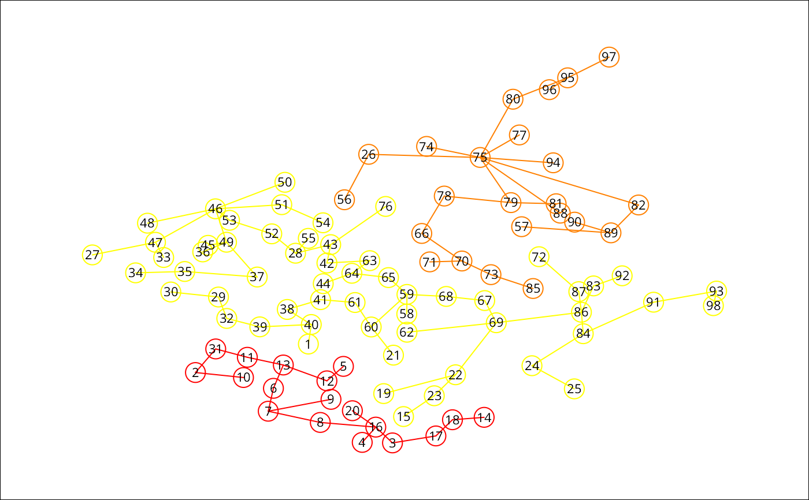
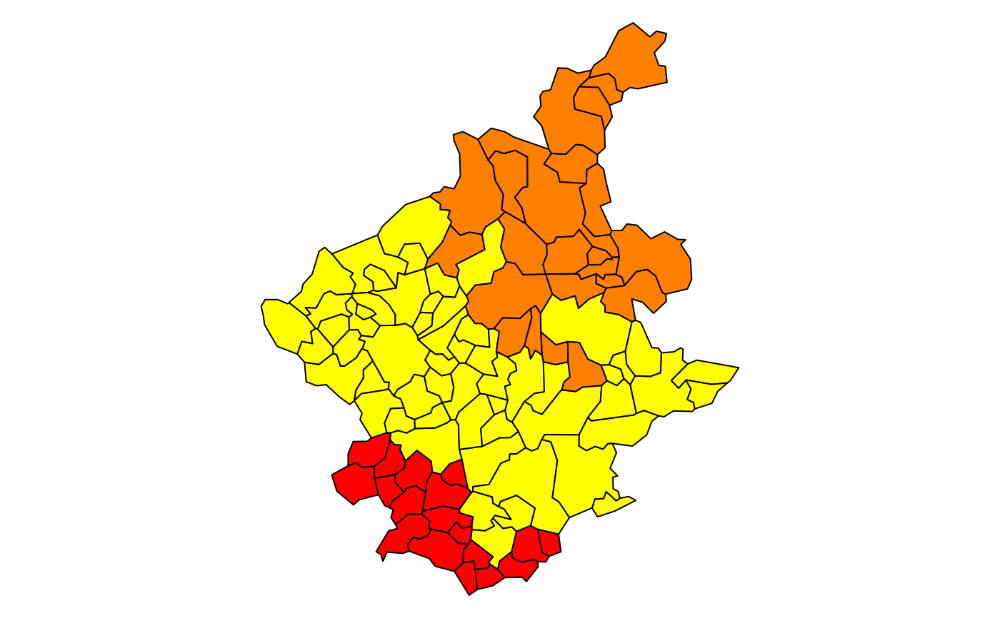

Spatial 'K'luster Analysis by Tree Edge Removal
skater.RdThis function implements a SKATER procedure for spatial clustering analysis. This procedure essentialy begins with an edges set, a data set and a number of cuts. The output is an object of 'skater' class and is valid for input again.
skater(edges, data, ncuts, crit, vec.crit, method = c("euclidean", "maximum", "manhattan", "canberra", "binary", "minkowski", "mahalanobis"), p = 2, cov, inverted = FALSE)
Arguments
| edges | A matrix with 2 colums with each row is an edge |
|---|---|
| data | A data.frame with data observed over nodes. |
| ncuts | The number of cuts |
| crit | A scalar ow two dimensional vector with with criteria for groups. Examples: limits of group size or limits of population size. If scalar, is the minimum criteria for groups. |
| vec.crit | A vector for evaluating criteria. |
| method | Character or function to declare distance method.
If |
| p | The power of the Minkowski distance. |
| cov | The covariance matrix used to compute the mahalanobis distance. |
| inverted | logical. If 'TRUE', 'cov' is supposed to contain the inverse of the covariance matrix. |
Value
A object of skater class with:
A vector with length equal the number of nodes. Each position identifies the group of node
A list of length equal the number of groups with each element is a set of edges
A vector identifying the groups with are not candidates to partition.
A vector identifying the groups with are candidates to partition.
The total dissimilarity in each step of edge removal.
References
Assuncao, R.M., Lage J.P., and Reis, E.A. (2002). Analise de conglomerados espaciais via arvore geradora minima. Revista Brasileira de Estatistica, 62, 1-23.
Assuncao, R. M, Neves, M. C., Camara, G. and Freitas, C. da C. (2006). Efficient regionalization techniques for socio-economic geographical units using minimum spanning trees. International Journal of Geographical Information Science Vol. 20, No. 7, August 2006, 797-811
See also
See Also as mstree
Examples
### loading data bh <- st_read(system.file("etc/shapes/bhicv.shp", package="spdep")[1], quiet=TRUE) st_crs(bh) <- "+proj=longlat +ellps=WGS84" ### data standardized dpad <- data.frame(scale(as.data.frame(bh)[,5:8])) ### neighboorhod list bh.nb <- poly2nb(bh) ### calculating costs lcosts <- nbcosts(bh.nb, dpad) ### making listw nb.w <- nb2listw(bh.nb, lcosts, style="B") ### find a minimum spanning tree mst.bh <- mstree(nb.w,5) ### the mstree plot par(mar=c(0,0,0,0)) plot(st_geometry(bh), border=gray(.5))plot(mst.bh, coordinates(as(bh, "Spatial")), col=2, cex.lab=.6, cex.circles=0.035, fg="blue", add=TRUE)### three groups with no restriction res1 <- skater(mst.bh[,1:2], dpad, 2) ### groups size table(res1$groups)#> #> 1 2 3 #> 18 23 57### the skater plot opar <- par(mar=c(0,0,0,0)) plot(res1, coordinates(as(bh, "Spatial")), cex.circles=0.035, cex.lab=.7)### the skater plot, using other colors plot(res1, coordinates(as(bh, "Spatial")), cex.circles=0.035, cex.lab=.7, groups.colors=heat.colors(length(res1$ed)))par(opar) ### EXPERT OPTIONS ### more one partition res1b <- skater(res1, dpad, 1) ### length groups frequency table(res1$groups)#> #> 1 2 3 #> 18 23 57#> #> 1 2 3 4 #> 18 23 55 2### thee groups with minimum population res2 <- skater(mst.bh[,1:2], dpad, 2, 200000, bh$Pop) table(res2$groups)#> #> 1 2 3 #> 22 37 39### thee groups with minimun number of areas res3 <- skater(mst.bh[,1:2], dpad, 2, 3, rep(1,nrow(bh))) table(res3$groups)#> #> 1 2 3 #> 18 23 57### thee groups with minimun and maximun number of areas res4 <- skater(mst.bh[,1:2], dpad, 2, c(20,50), rep(1,nrow(bh))) table(res4$groups)#> #> 1 2 3 #> 50 24 24### if I want to get groups with 20 to 40 elements res5 <- skater(mst.bh[,1:2], dpad, 2, c(20,40), rep(1,nrow(bh))) ## DON'T MAKE DIVISIONS table(res5$groups)#> #> 1 #> 98### In this MST don't have groups with this restrictions ### In this case, first I do one division ### with the minimun criteria res5a <- skater(mst.bh[,1:2], dpad, 1, 20, rep(1,nrow(bh))) table(res5a$groups)#> #> 1 2 #> 75 23### and do more one division with the full criteria res5b <- skater(res5a, dpad, 1, c(20, 40), rep(1,nrow(bh))) table(res5b$groups)#> #> 1 2 3 #> 22 23 53### and do more one division with the full criteria res5c <- skater(res5b, dpad, 1, c(20, 40), rep(1,nrow(bh))) table(res5c$groups)#> #> 1 2 3 4 #> 22 23 33 20### It don't have another divison with this criteria res5d <- skater(res5c, dpad, 1, c(20, 40), rep(1,nrow(bh))) table(res5d$groups)#> #> 1 2 3 4 #> 22 23 33 20data(boston, package="spData") bh.nb <- boston.soi dpad <- data.frame(scale(boston.c[,c(7:10)])) ### calculating costs system.time(lcosts <- nbcosts(bh.nb, dpad))#> user system elapsed #> 0.052 0.000 0.052### making listw nb.w <- nb2listw(bh.nb, lcosts, style="B") ### find a minimum spanning tree mst.bh <- mstree(nb.w,5) ### three groups with no restriction system.time(res1 <- skater(mst.bh[,1:2], dpad, 2))#> user system elapsed #> 2.264 0.057 2.332library(parallel) nc <- detectCores(logical=FALSE) # set nc to 1L here if (nc > 1L) nc <- 1L coresOpt <- get.coresOption() invisible(set.coresOption(nc)) if(!get.mcOption()) { # no-op, "snow" parallel calculation not available cl <- makeCluster(get.coresOption()) set.ClusterOption(cl) } ### calculating costs system.time(plcosts <- nbcosts(bh.nb, dpad))#> user system elapsed #> 0.052 0.001 0.053#> [1] TRUE### making listw pnb.w <- nb2listw(bh.nb, plcosts, style="B") ### find a minimum spanning tree pmst.bh <- mstree(pnb.w,5) ### three groups with no restriction system.time(pres1 <- skater(pmst.bh[,1:2], dpad, 2))#> user system elapsed #> 2.808 0.075 2.929if(!get.mcOption()) { set.ClusterOption(NULL) stopCluster(cl) } all.equal(res1, pres1, check.attributes=FALSE)#> [1] TRUE